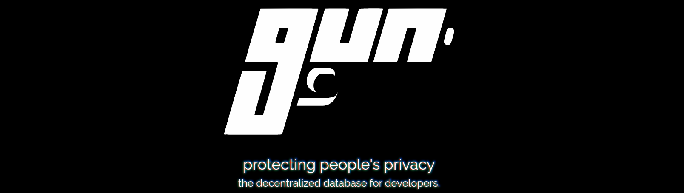

Thomas WILHEM - DAWIN B - 2022/23

Gun est un écosystème d’outil permettant de synchroniser des données de façon sécurisée, en "Offline First" et sans utiliser de base de données traditionnelles. La persistance de données se fait via les utilisateurs.
Le graphe de données est distribué parmi tous les pairs utilisant le réseau. Un pair peut posséder l’entièreté, une partie ou aucune partie du graphe de données. La base de données entière est en réalité l’union de tous les graphs possédés par les pairs.
Cela vient donc remplacer une architecture "server based" classique
Pour accéder à une donnée un pair va “parcourir” le graphe via les autres pairs. Comme la structure est un graphe, elle peut contenir n'importe quel type de structures.
Quelle est l'utilité ?
Gun permet de stocker des données de facon décentralisé, sans serveur(s) possédants toutes les donnees. Cela va ainsi permettre de ne pas avoir à payer de serveurs pour y stocker des données ou autre. De plus, l’utilisation de Gun combinée à SEA permet d’avoir une très bonne sécurité pour les données.
Gun déjà présent dans différents projets :
Gun est déjà utilisé dans différents projets/entreprises comme Twitter, NBC, Yahoo,...